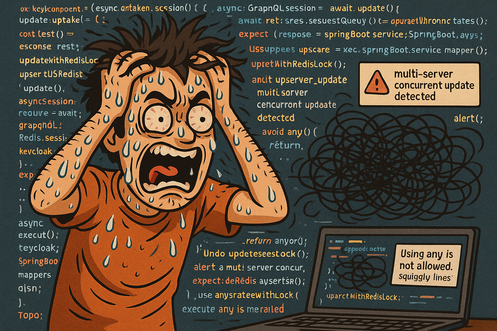

MoP 与清单革命
Posted on Sun 20 April 2025 in Journal
| Abstract | MoP 与清单革命 |
|---|---|
| Authors | Walter Fan |
| Category | learning note |
| Status | v1.0 |
| Updated | 2025-04-20 |
| License | CC-BY-NC-ND 4.0 |
MoP 与清单革命 —— 有章可循，有案可查！
引子：世界是个大草台班子, 人都是靠不住的
先问大家一个灵魂拷问：
“你上次因为一个低级失误掉生产环境，是啥时候？”
别不好意思，码农们都是一路错过来的, 踩坑无数, 背过锅, 可能也甩过锅. 正如伟大的医学作家葛文德在《清单革命》里说的，人类犯错，主要分两类：
- 无知之错：啥也不知道，瞎搞。
- 无能之错：明明知道怎么搞，结果一紧张/一大意，还是搞砸了。
程序员？DevOps？SRE？ 咱们这些整天和复杂的系统和产线环境缠斗的群体，尤其擅长第二种错。

没办法，在如今这个知识爆炸、需求一夜十变的时代，即便头顶秃了，出错率也降不下来。
于是，清单革命来了，带着一张张小卡片或者表单、一个个勾选框，拯救我们这些又累又迷茫的打工人。
当年读过《清单革命》这本书, 留下的印象是清单很重要, 检查表既可以总结经验, 也可以避免纰漏,
后来经历过的大大小小的故障多了, 也写过一些清单和 MoP, 才深刻的体会到清单是关键时刻的护身符和救命稻草.
什么是清单？是不是就是小抄？
简单说，清单就是：
“在你忙到想骂人的时候，替你记得那些 必须不能忘 的小破事儿。”
比如：
- 手术前确认病人身份（要不然你开错人了咋办？）
- 发布代码前记得切到正确分支（别又把
feature/liulangmao推到生产了） - 部署服务器前关掉防火墙（不然你远程连不上只能自闭）
注意⚠️： 清单不是在羞辱你的智商，而是帮助你在压力山大的时候，不犯蠢。
正经来说，清单可以分三种情况使用：
| 问题类型 | 举例 | 适用清单 |
|---|---|---|
| 简单问题 | 比如安装一个nginx | 确认步骤，不要漏 |
| 复杂问题 | 比如发布一个大型微服务系统 | 多人配合，协调流程 |
| 极端复杂问题 | 比如处理线上突发全链路故障 | 用清单保证最基本动作，同时保留灵活应变的余地 |
一句话总结：
清单=记得该做的事 + 允许该灵活的时候灵活
MoP：专业打工人的作业指导书
在IT圈，大家经常会听到MoP这个词——Method of Procedure，翻译成大白话：
“干啥事儿，咱有章可循。”
MoP是啥？一句话：
- 不是日常琐碎的SOP（日常操作标准流程）
- 也不是突发情况应急的EOP（应急操作流程）
- 而是 针对非日常、非routine、复杂/危险的操作，一步步指导怎么干
比如：
- 线上数据库版本升级
- 跨机房网络割接
- 多节点集群滚动重启
- ……
这些活，一旦搞砸，轻则背锅，重则收拾东西走人。
所以必须搞清楚MoP应该长啥样：
| MoP元素 | 说明 |
|---|---|
| 标题和描述 | 要干啥？范围是啥？ |
| 事前检查 | 前置条件都满足了吗？备份了吗？ |
| 步骤指引 | 每一步该做啥，按顺序清清楚楚写明 |
| 故障应对 | 出了岔子怎么办？有没有回滚方案？ |
| 事后验证 | 怎么确认自己干成了？有没有漏 |
一句话总结：
MoP就是打工人保命的作业指导书，千万别嫌烦。
为什么软件开发运维，必须“有章可循，有案可查”？
1. 人类天生靠不住
无论你有多聪明，人在压力、疲惫、分心的时候，一定会出错。
记忆力？注意力？呵呵，交给清单吧。
2. 系统复杂到飞起
现在一套系统，动不动就几十个微服务，三五个数据库，七八条消息通道。
靠人脑随便操作，风险比在高速路上倒车还高。
清单 + MoP，帮你规避95%的低级错。
3. 团队协作，需要统一标准
不同人，不同风格，出活方式五花八门。
今天小张推了个补丁，明天小王部署少了一步，后天老李干脆直接改配置……
靠嘴皮子管理团队？别闹了，写清清楚楚的MoP，大家按照标准操作，少掉很多坑。
4. 事后复盘，有案可查
哪怕真的出事了，有了完整的MoP和执行记录，也能方便分析哪里出的问题，是清单本身缺失？还是操作执行偏离？
锅归谁，心中有数。
写清单、做MoP，有哪些坑？
别以为清单写了，MoP画了，事情就万事大吉。
如果随便一张清单就长这样：
步骤1：检查一下机器。
步骤2：搞一下配置。
步骤3：确认一下可以上线。
步骤4：开心上线。
那么恭喜你，等着出事吧！
清单和MoP，要做到这 6 点：
- 简单明了，不要长篇累牍, 不要写废话。
- 有清晰检查点，让人知道何时确认✅。
- 语言专业，但接地气, 既不晦涩, 也不含糊。
- 格式清晰，便于快速检索, 查阅和确认✅。
- 清单所列的步骤如果能自动化就尽量自动化, 但不要完全依赖自动化, 人会出错, 程序也会
- 经实践所检验，并不断迭代和改进清单
一句话：
清单和MoP，不是用来装门面的，是用来救命的。
尾声：拥抱清单，拥抱不完美
我们得承认一个事实：
- 人都会犯错。
- 系统永远比你想象的复杂。
- 世界不会因为你的努力而更简单。
所以，与其死撑，不如用清单和MoP，给自己留条活路。
清单不是束缚，而是解放。
MoP不是繁文缛节，而是护身法宝。
正如《清单革命》里说的：
“真正的职业精神，不是孤胆英雄式的天才，而是无私、训练有素、值得信赖、遵守纪律。”
程序员、运维、SRE、DevOps们，让我们从今天开始，
带着清单与记录, 处处有章可循，事事有案可查， 勇敢面对这不断袭来的纷扰, 从容应对这不停变化的世界
参考资料
- <<清单革命>>
- Method of Procedure
本作品采用知识共享署名-非商业性使用-禁止演绎 4.0 国际许可协议进行许可。